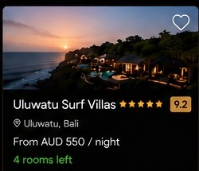
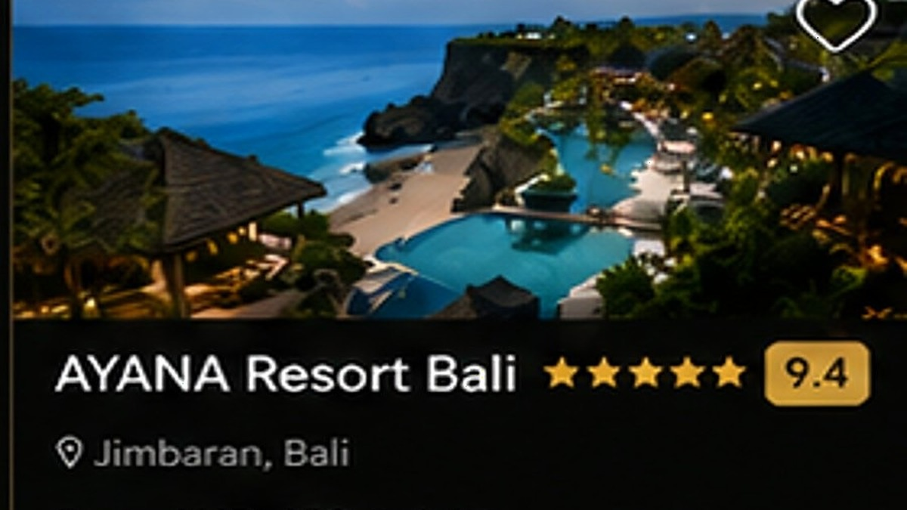

Uluwatu & Sunset
Explore dramatic cliffs, coastal temples and a memorable sunset journey across southern Bali.
PLAN THIS EXPERIENCE →Private journeys, cultural discoveries and unforgettable moments beyond the hotel.

Explore dramatic cliffs, coastal temples and a memorable sunset journey across southern Bali.
PLAN THIS EXPERIENCE →
Discover temples, rice terraces, local craftsmanship and the calm heart of Bali.
PLAN THIS EXPERIENCE →
A bespoke day of dining, spa, beach clubs and private transfers arranged around your preferences.
PLAN THIS EXPERIENCE →